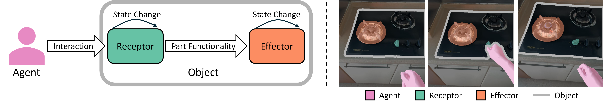
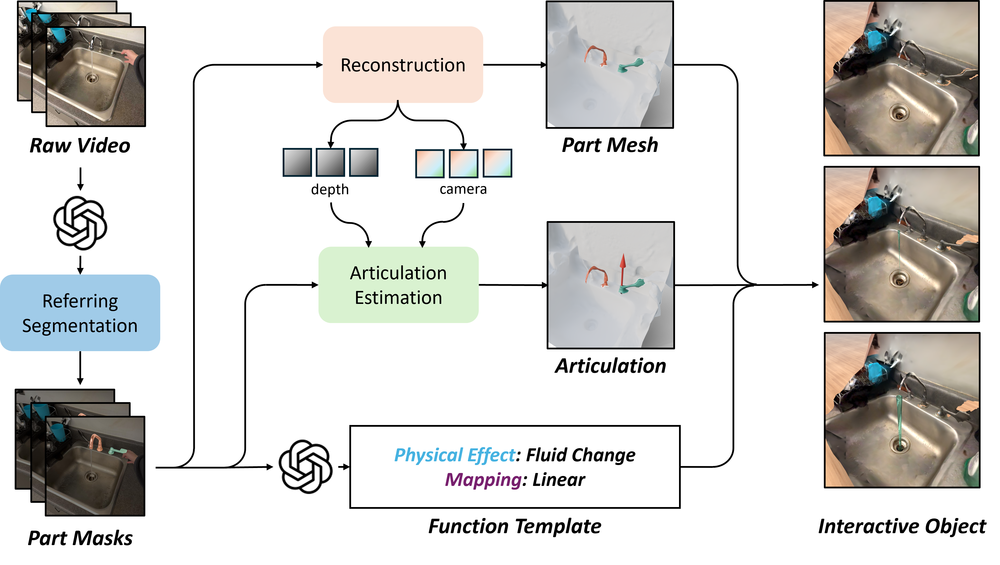
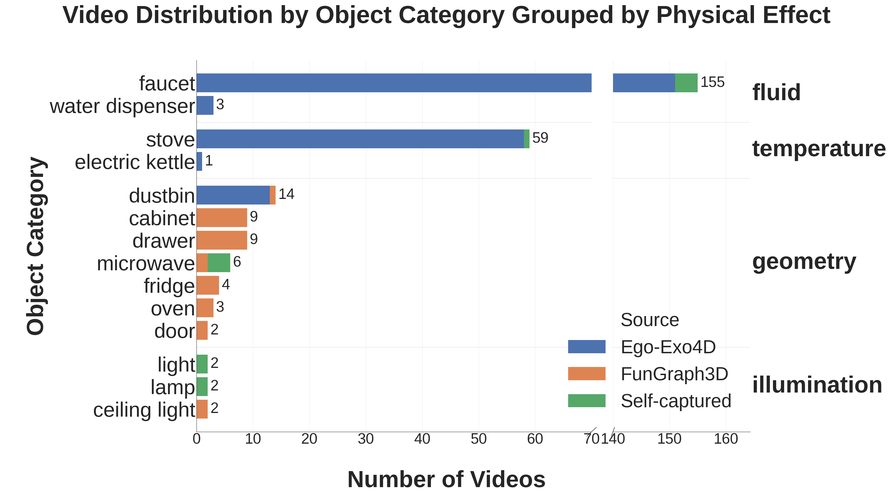
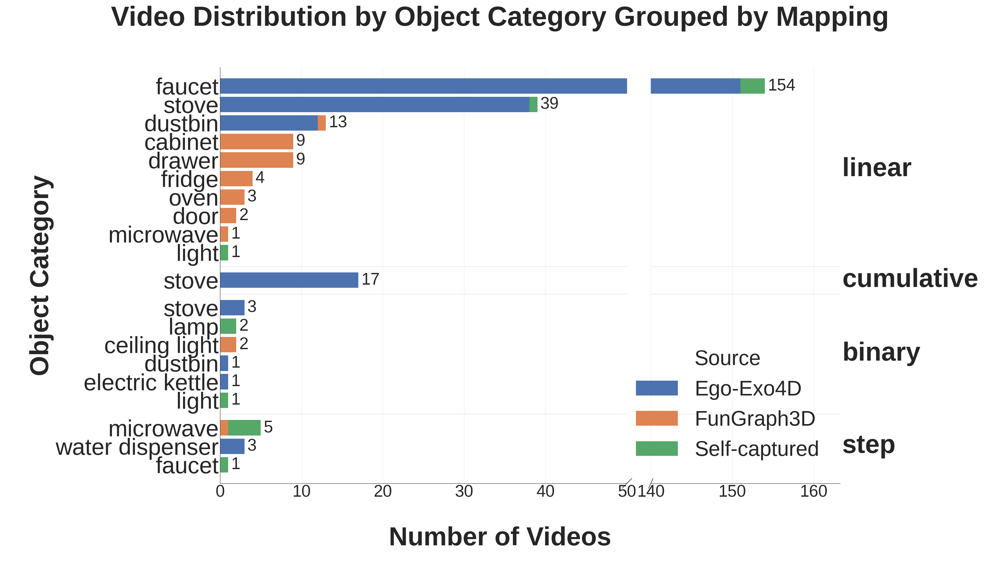

Abstract
We present EgoFun3D, a coordinated task formulation, dataset, and benchmark for modeling interactive 3D objects from egocentric videos. Interactive objects are of high interest for embodied AI but scarce, making modeling from readily available real-world videos valuable. Our task focuses on obtaining simulation-ready interactive 3D objects from egocentric video input. While prior work largely focuses on articulations, we capture general cross-part functional mappings (e.g., rotation of stove knob controls stove burner temperature) through function templates, a structured computational representation. Function templates enable precise evaluation and direct compilation into executable code across simulation platforms. To enable comprehensive benchmarking, we introduce a dataset of 271 egocentric videos featuring challenging real-world interactions with paired 3D geometry, segmentation over 2D and 3D, articulation and function template annotations. To tackle the task, we propose a 4-stage pipeline consisting of: 2D part segmentation, reconstruction, articulation estimation, and function template inference. Comprehensive benchmarking shows that the task is challenging for off-the-shelf methods, highlighting avenues for future work.
Part Functionality

Illustration of a typical form of human-object interaction. An agent interacts with a receptor, changing its state. Part functionality defines how the state change of the receptor maps to the state change of the effector. On the right, we provide an example of human interacting with a knob of the stove. The part function triggers the temperature change of the burner after knob actuation.
Baseline Method

Our baseline framework. We break down the task into 4 steps that are individually targeted with off-the shelf components. First, a VLM generates part descriptions which are used to segment the parts in the video. Then, the geometry of the receptor and the effector are reconstructed, articulation parameters are estimated, and the function template is inferred. These outputs are combined to build the interactive object.
EgoFun3D Dataset
| 2D Segmentation |
|
|
|
|---|---|---|---|
| 3D Segmentation and Articulation |
|
|

|
| Function Template |
Physical Effect: Fluid Change Mapping: Linear |
Physical Effect: Geometry Change Mapping: Step |
Physical Effect: Illumination Change Mapping: Binary |
| Interactive Object |
|
|
|
| Data Source | Ego-Exo4D | FunGraph3D | Self-captured |
Examples of annotations in our dataset. We provide 2D segmentation masks for hands, receptor (in teal), effector (in orange), and the whole object. We annotate part segmentation for receptor and effector on reconstructed 3D meshes. For articulation, we annotate revolute and prismatic joints, shown as red and green arrows respectively. For the function template, we pick one of four physical effects and one of four numerical expressions. Finally, we show concrete instantiations of interactive objects in different simulators: Genesis (left), Isaac Sim (middle), BEHAVIOR (right).


Our egocentric video dataset distributions across object categories. There are prominent long tail distributions across categories, physical effects, and function mappings, primarily due to inherited biases from source datasets such as Ego-Exo4D.
Benchmark Results
2D Segmentation
| Model | IoU (%) | Success (%) | Avg. Run. (s) | |||
|---|---|---|---|---|---|---|
| Receptor | Effector | Avg. | Receptor | Effector | ||
| VisionReasoner | 14.6 | 34.9 | 24.7 | 7.4 | 33.9 | 452 |
| SAM3 & Qwen3-VL | 30.0 | 47.9 | 38.8 | 23.2 | 55.0 | 2012 |
| SAM3 & Molmo2 | 14.0 | 29.4 | 21.7 | 6.6 | 20.7 | 392 |
| X-SAM | 2.5 | 15.0 | 8.7 | 0.4 | 9.2 | 255 |
| Sa2VA | 14.8 | 43.4 | 29.1 | 1.8 | 33.2 | 2006 |
As downstream pipeline steps rely on segmentation, we select only the parts with average IoU greater than 50% for further evaluation of the downstream modules. We consider such cases to be a segmentation success, and report the success rates additionally. We find that SAM3 & Qwen3-VL outperforms other methods by a large margin, but is very inefficient.
| Ground Truth |
|
|
|
|---|---|---|---|
| SAM3-Agent+Qwen3VL |
|
|
|
Example 2D segmentation results. We find that SAM3 with Qwen3-VL provides the best segmentation. The main challenges in this subtask are segmentation of incorrect parts (left) and confusion between part instances across frames (middle). Performance on videos featuring more static viewpoints and no part instance ambiguity is better, though such videos are rare (right).
Reconstruction
| Method | Receptor CD (m^2) | Effector CD (m^2) | Total CD (m^2) | Camera Rot. Err. (rad) | Camera Tr. Err. (m) |
|---|---|---|---|---|---|
| MapAnything | 0.380 | 0.953 | 0.580 | 1.033 | 0.742 |
| Depth Anything 3 | 0.026 | 0.014 | 0.016 | 0.045 | 0.049 |
| ViPE | 0.034 | 0.021 | 0.025 | 0.046 | 0.058 |
Evaluating reconstruction. We report the median value of the chamfer distance and mean value of camera pose prediction error. Depth Anything 3 performs the best out of the methods we benchmark. MapAnything severely underperforms due to the camera predictions errors.

|

|

|

|

|

|

|

|
| Ground Truth | Depth Anything 3 | MapAnything | ViPE |
Example results for reconstruction. MapAnything exhibits severe drifting issues as predicted camera poses for different video frames are inaccurate. Other approaches also exhibit significant artifacts. Overall, reconstruction from our egocentric video data is highly challenging for all methods.
Articulation Estimation
| Method | Joint Axis Err. (Rad) | Joint Origin Err. (m) | Joint Type Acc. (%) | Failure Rate (%) |
|---|---|---|---|---|
| Artipoint | 1.057 | 0.346 | 74.2 | 46.4 |
| iTACO | 1.022 | 0.665 | 26.8 | 5.6 |
Evaluating articulation parameters estimation. We report the mean error across the videos that successfully go through the whole pipeline. We find that Artipoint is more accurate than iTACO, but is less robust. The overall performance for both methods is very low, indicating that articulation estimation is one of the bottlenecks.

|

|

|

|

|

|
| Ground Truth | ArtiPoint | iTACO |
Example results for articulation estimation. Red arrows refer to revolute joints and green arrows refer to prismatic joints. In the left example, iTACO predicts incorrect joint types, whereas Artipoint is correct. However, both methods struggle with small parts such as the stove knob shown here.
Function Prediction
| Method | Physical Effect Acc. (%) | Mapping Acc. (%) | Overall Acc. (%) |
|---|---|---|---|
| Gemini 3 Flash | 95.2 | 97.6 | 92.9 |
| GPT-5 mini | 88.1 | 90.5 | 83.3 |
| Molmo2 8B | 90.5 | 31.0 | 28.6 |
| Qwen3-VL 8B | 97.6 | 76.2 | 76.2 |
Evaluation of function template inference accuracy. We report prediction accuracy for physical effect, mapping, and overall accuracy. A function template is correct if both effect and mapping are correct. We only report accuracy across videos where both receptor and effector segmentation IoUs are larger than 0.5. Among the four different VLMs we benchmarked on this task, Gemini-3-flash performs the best.
Final Interactive Object
Qualitative results of the final outputs of our system. For each pair of videos, the left video shows the ground truth and the right video shows the prediction. The faucet results are from Genesis, the stove and lamp results are from BEHAVIOR, and the fridge door result is from Isaac Sim. We use teal to indicate receptors and orange to indicate effectors.
Acknowledgments
This work was funded in part by a Canada Research Chair, NSERC Discovery Grant, and enabled by support from the Digital Research Alliance of Canada. The authors would like to thank Tianrun Hu from National University of Singapore for collecting data, Jiayi Liu, Xingguang Yan, Austin T. Wang, and Morteza Badali for valuable discussions and proofreading.
BibTeX
@article{peng2026egofun3d,
title={{EgoFun3D: Modeling Interactive Objects from Egocentric Videos using Function Templates}},
author={Peng, Weikun and Iliash, Denys and Savva, Manolis},
journal={arxiv preprint},
year={2026}
}